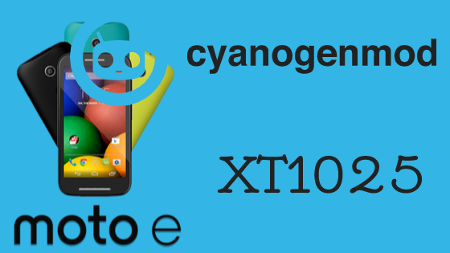

Cyanogen Mod 6.0 para o MOTO E XT1025
Olha, se você não está sastifeito com as funcionalidades stock de seu MOTO E, realizar a instalação de uma custom rom Cyanogen Mod pode ser uma boa opção, uma vez em que várias opções de customização desde motor de temas até mudanças na sidebar podem dar aquele visual sutíl e elegante ao seu aparelho. Se deseja realizar a instalação em seu dispositivo continue conosco póis iremos iniciá-lo agora. :)
#REQUISITOS
-
Após ter baixado o arquivo da firmware, transfira para a memória interna do aparelho e o desligue.
Trasfira também o arquivo GAPPS.
Entre na recovery TWRP {ou a de seu uso} pressionando as teclas de VOL- e POWER por alguns segundos, quando então desça com atecla de VOL - ate _Recovery e comfirme com a tecla POWER.
Selecione WIPE, clique em ADVANCED WIPE e selecione DATA, DALVIK/ART Cache, CACHE e Swipe to Wipe.
Agora que seu dispositivo está preparado para resceber um novo sistema, iremos instalar o arquivo da firmware que fora transferido a passos anteriores para a memória do aparelho.
Volte ao Menu Inicial e clique em INSTALL. Se você optou por trasferir os arquivos pra memória externa clique em select storage e então selecione 'cm-13.0-20151113-UNOFFICIAL-condor.zip' e clique em Swipe to Install. {realize o mesmo passo caso tenha transferido pra memória interna.}
Após a instalação volte e selecione o aquivo GAPPS6.zip e realize os mesmos passos anteriores: Selecione swipe to install.
Após a instalação do GAPPS clique em Wipe cache/dalvick > Swipe to Wipe e para finalizar Reboot System.
Com isso aquarde mais ou menos 15 minutos para seu aparelho iniciar e desfrutar dos benefícios dessa rom.
-
NÃO SOU CAÇADOR, MAS CAPTUREI ALGUMAS TELAS PARA VOCÊ


Então, se obteve problemas com alguns dos passos listados acima, fique tranquilo a deixar seus comentários logo abaixo.